Quick References: AI Motivation Slide Design
TL;DR
고등학생 대상 20분 발표에는 “깨끗한 교육 톤 + 순간적으로 몰입시키는 다크 테크 키노트 + 개인 성장 스토리 타임라인” 조합이 가장 잘 맞습니다. 슬라이드는 예쁘기보다 한 장에 한 메시지, 큰 글자, 카드형 요약, 사진/비유 중심으로 가는 것이 좋습니다.
Patterns
추천 방향: “따뜻한 교육 × AI 키노트 × 개인 성장담”
• **기본 톤:** 밝은 배경, 넓은 여백, 큰 한글 타이틀, 파란/보라 계열 포인트.
• **AI/컴퓨터비전 설명 파트:** 2~3장 정도만 다크 배경으로 전환해서 “기술자/연구자” 분위기를 준다.
• **편입 계기와 공부 동기 파트:** 사진보다 **타임라인/계단/전환점 카드**가 좋다. 너무 감정적으로 과장하지 않고, “내 위치가 끝은 아니었다”는 메시지로 정리.
• **고등학생 대상:** 전문성보다 이해와 몰입이 우선. 표/논문식 슬라이드보다 “질문 → 사례 → 한 문장 결론” 구조가 낫다.
Deck system proposal
16:9 / Noto Sans KR or Pretendard
Backgrounds
- Main: #F7FAFF / #FFFFFF
- Tech section: #070B18 / #0B1020
Accent
- AI blue: #2D6BFF
- Vision purple: #8B5CF6
- Motivation orange: #F97316
Rules
- 1 slide = 1 message
- Title 44~64px, body 24~32px
- 한 슬라이드 문장 3줄 이하
- 도표보다 카드, 카드보다 한 문장Suggested slide archetypes
1) Opening question slide
┌────────────────────────────────────────────┐
│ │
│ 여러분은 오늘 AI를 │
│ 몇 번 만났을까요? │
│ │
│ YouTube · 카메라 · 번역 · 추천 · ChatGPT │
│ │
└────────────────────────────────────────────┘2) What I do slide
┌────────────────────────────────────────────┐
│ AI에게 눈을 만들어주는 일 │
│ │
│ [Camera] → [Model] → [Experience] │
│ 본다 이해한다 도움이 된다 │
└────────────────────────────────────────────┘3) Personal turning point slide
┌────────────────────────────────────────────┐
│ 내 위치가 내 끝은 아니었다 │
│ │
│ 지방 캠퍼스 ── Google 세미나 ── 편입 준비 │
│ 출발점 전환점 방향 │
│ │
│ “나를 당당하게 소개하고 싶었다” │
└────────────────────────────────────────────┘4) Why study in the AI era slide
┌────────────────────────────────────────────┐
│ AI 시대에 공부가 필요한 이유 │
│ │
│ ┌────────┐ ┌────────┐ ┌────────┐ │
│ │ 질문력 │ │ 판단력 │ │ 선택지 │ │
│ └────────┘ └────────┘ └────────┘ │
└────────────────────────────────────────────┘References
Pattern A: Warm education hero — 학생 눈높이에 맞는 “친근한 진입”
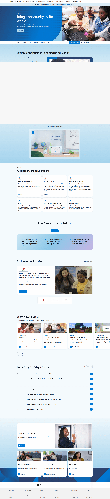
*Microsoft Education AI — 교육 AI를 영웅 영역, CTA, 카드 그리드, 스토리 섹션으로 풀어내는 구조. [Lazyweb]*
Source: https://www.microsoft.com/en-us/education/ai-in-education
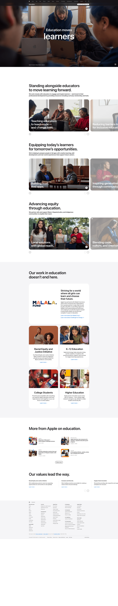
*Apple Education — 큰 이미지 타일과 짧은 문장으로 교육 이야기를 감성적으로 연결. [Lazyweb]*
Source: https://www.apple.com/education-initiative/
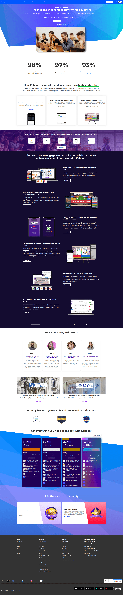
*Kahoot — 교육 플랫폼답게 밝고 에너지 있는 색감, 학생 참여/몰입 느낌. [Lazyweb]*
Source: https://kahoot.com/schools/higher-ed/
Use for this talk: 첫 2~3장은 밝고 친근하게 시작하세요. “AI가 이미 여러분 일상에 있다”는 메시지에는 Microsoft/Apple식 넓은 여백과 큰 질문형 타이틀이 잘 맞습니다.
┌───────────────────────────────┐
│ 큰 질문형 헤드라인 │
│ 짧은 보조 문장 │
│ │
│ [생활 속 AI 예시 카드 3개] │
└───────────────────────────────┘Pattern B: Dark tech keynote — AI/컴퓨터비전 설명 파트의 몰입감
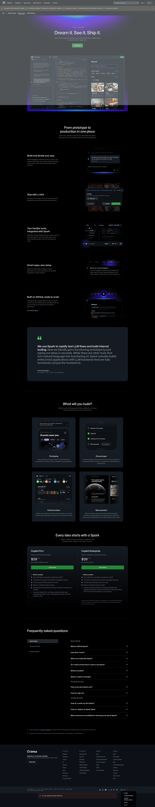
*GitHub Spark — 다크 배경, 강한 헤드라인, 제품/기술 프리뷰로 미래지향적인 분위기. [Lazyweb]*
Source: https://github.com/features/spark

*Linear — 어두운 배경과 정교한 제품 UI 프리뷰로 “프로페셔널한 기술” 인상을 줌. [Lazyweb]*
Source: https://linear.app/
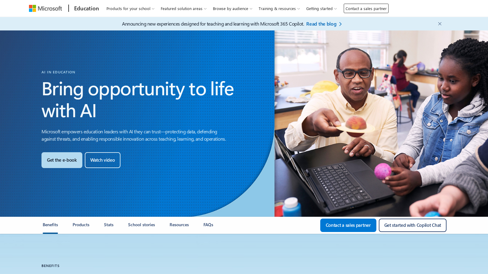
*Microsoft AI Education 현재 웹 캡처 — 교육 맥락 안에서 AI를 신뢰감 있게 보여주는 페이지. [Web]*
Source: https://www.microsoft.com/en-us/education/ai-in-education
Use for this talk: “컴퓨터 비전 = AI에게 눈을 만들어주는 기술”을 설명할 때 한 번 분위기를 바꾸면 학생들이 집중합니다. 단, 전체를 다크로 만들면 무거워지므로 섹션 구분용으로만 쓰는 것이 좋습니다.
┌───────────────────────────────┐
│ DARK TECH SECTION │
│ │
│ 카메라 = AI의 눈 │
│ 데이터 = AI의 교과서 │
│ 모델 = AI의 두뇌 │
└───────────────────────────────┘Pattern C: Learning/cards — 공부 메시지를 구조화하기
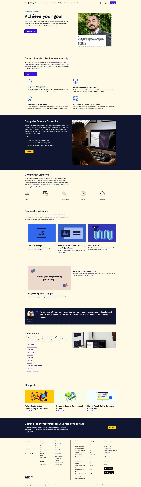
*Codecademy Student Center — 학생 대상 학습 경로, 커리큘럼 카드, 커뮤니티/리소스 카드 구성. [Lazyweb]*
Source: https://www.codecademy.com/student-center
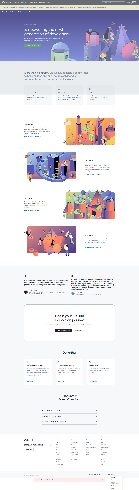
*GitHub Education — 학생/교사/학교 등 대상을 나누고 여정을 시작하게 만드는 교육 랜딩 구조. [Lazyweb]*
Source: https://github.com/education
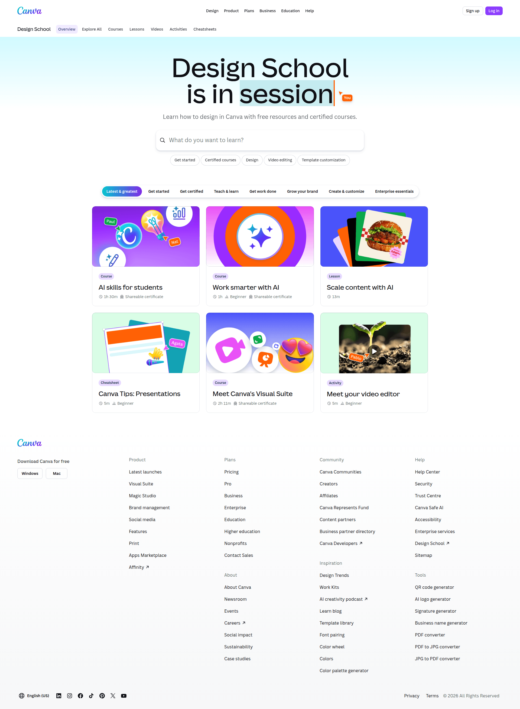
*Canva Design School — 검색/토픽/학습 카드 중심의 친근한 교육 허브. [Lazyweb]*
Source: https://www.canva.com/design-school
Use for this talk: “AI 시대에도 공부가 필요한 이유 3가지”는 카드 3개로 끝내세요. 학생들이 메모 없이도 기억하기 쉽습니다.
┌───────────────────────────────┐
│ 공부는 정답 암기가 아니라... │
│ │
│ ┌───────┐ ┌───────┐ ┌───────┐│
│ │질문력 │ │판단력 │ │선택지 ││
│ │AI에게 │ │AI 답을│ │미래의 ││
│ │묻는 힘│ │검증함│ │길을 엶││
│ └───────┘ └───────┘ └───────┘│
└───────────────────────────────┘Pattern D: Lecture/webinar credibility — “내가 하는 일”을 과하지 않게 보여주기
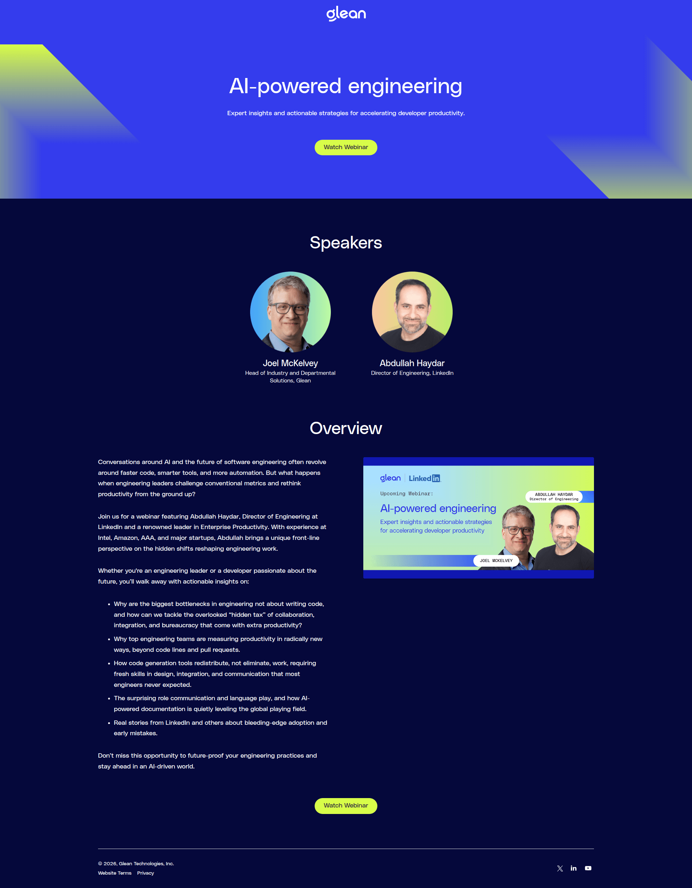
*Glean Webinar — 강연/웨비나형 구조: 주제, 발표자, 개요, CTA가 명확. [Lazyweb]*
Source: https://www.glean.com/webinars/ai-powered-engineering
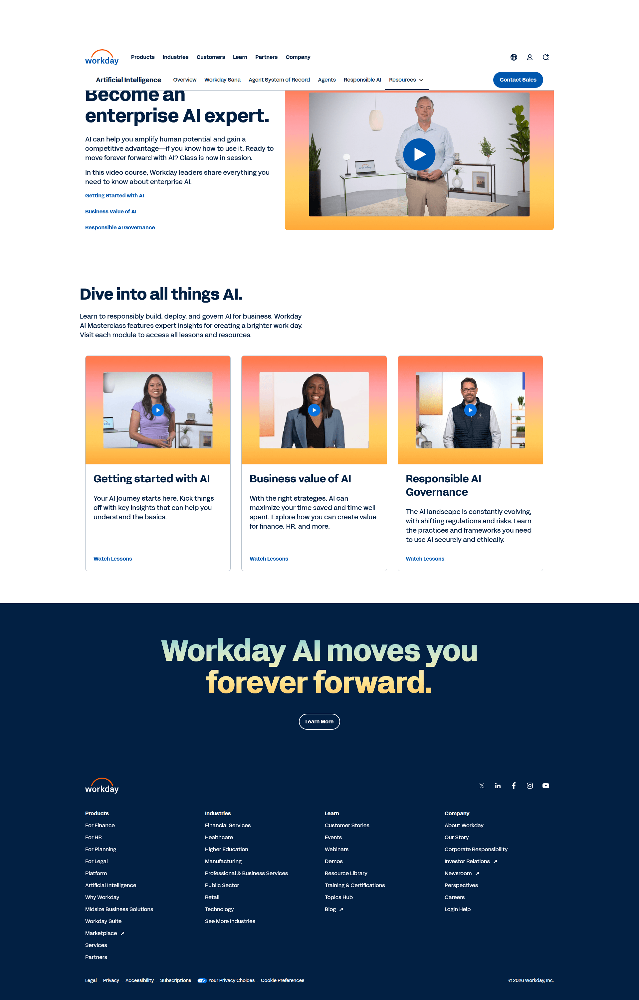
*Workday AI Masterclass — 영상/강좌/모듈 카드로 AI 강연을 전문적으로 포장. [Lazyweb]*
Source: https://www.workday.com/en-us/artificial-intelligence/ai-masterclass.html
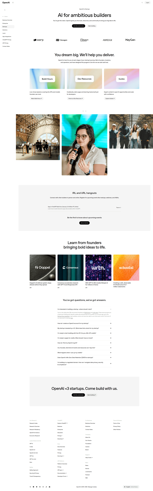
*OpenAI Startups — 커뮤니티/리소스 카드와 큰 메시지로 AI 생태계를 설명. [Lazyweb]*
Source: https://openai.com/startups/
Use for this talk: 경력 소개는 1장으로 충분합니다. 학교/회사 로고를 나열하기보다 “무엇을 만드는 사람인가”를 중심에 두세요.
┌───────────────────────────────┐
│ 저는 이런 일을 합니다 │
│ │
│ AI Research → Product → Experience
│ 연구 성능 제품화 사람이 체감
│ │
│ 성균관대 · 서울대 · 삼성전자 │
└───────────────────────────────┘Pattern E: One-message title slide — 기억에 남는 문장 하나
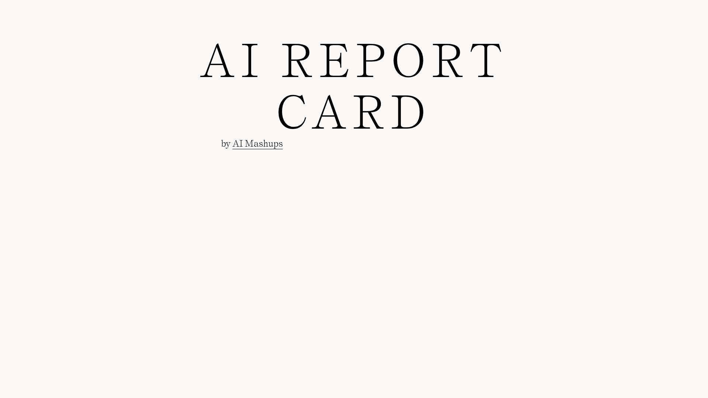
*AI Report Card — 거의 한 문장만으로 만드는 극단적으로 단순한 제목 슬라이드. [Lazyweb]*
Source: https://maxbatt.com/ai-report-card/
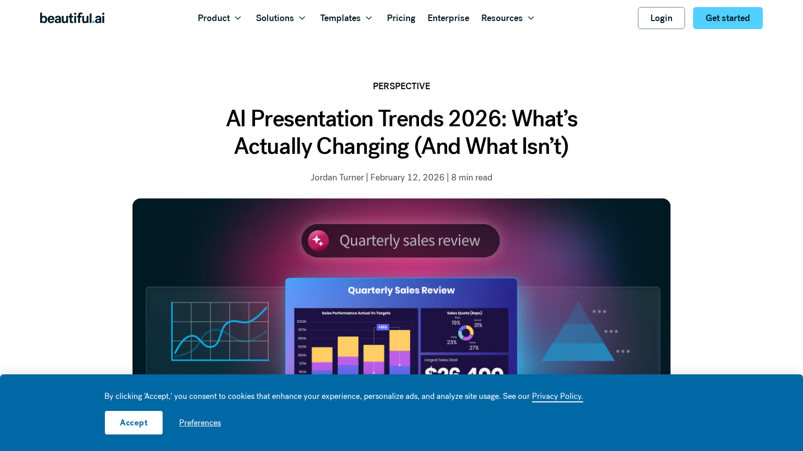
*Beautiful.ai presentation trends — 발표 디자인 트렌드 글의 히어로/콘텐츠 구조. [Web]*
Source: https://www.beautiful.ai/blog/ai-presentation-trends-2026
Use for this talk: 핵심 메시지는 “한 문장 슬라이드”로 따로 빼는 게 좋습니다. 특히 편입 계기 뒤에 아래 문장만 크게 보여주면 효과적입니다.
┌───────────────────────────────┐
│ │
│ 지금 내 위치가 │
│ 내 끝은 아니다 │
│ │
└───────────────────────────────┘Pattern F: Current web captures — 실제 최신 웹 톤 확인용
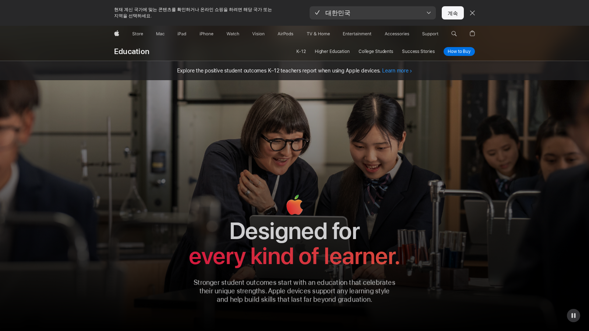
*Apple Education 현재 웹 캡처 — 대상별 카드와 스토리 피드. [Web]*
Source: https://www.apple.com/education/
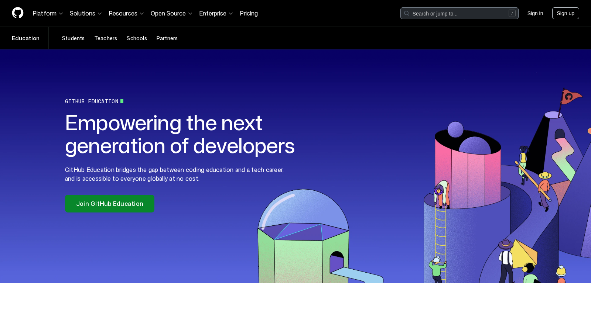
*GitHub Education 현재 웹 캡처 — 개발자 교육/커뮤니티/여정 시작 메시지. [Web]*
Source: https://github.com/education
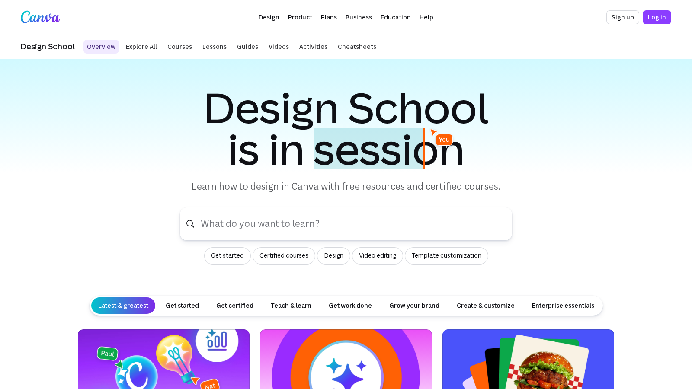
*Canva Design School 현재 웹 캡처 — 밝고 쉬운 디자인 학습 허브. [Web]*
Source: https://www.canva.com/design-school/
Use for this talk: 마지막 조언 파트는 밝은 웹 캡처들처럼 가볍게 마무리하세요. “질문하기, 만들어보기, 기록하기”를 카드로 정리하면 학생들이 바로 가져갈 수 있습니다.
Recommended direction for your slide deck
Best-fit visual concept
“좋은 선배가 들려주는 AI 시대 공부 이야기”
너무 기업 강연처럼 딱딱하지 않고, 너무 감성 강연처럼 보이지도 않게, 신뢰감 있는 기술자 + 진심 있는 성장담의 균형을 잡는 디자인이 좋습니다.
Proposed 10-slide structure
1. Title: AI가 공부를 대신해주는 시대, 우리는 왜 공부해야 할까?
2. Opening question: 오늘 AI를 몇 번 만났을까?
3. Who I am: AI를 사람의 경험으로 바꾸는 일을 합니다
4. Computer vision: AI에게 눈을 만들어주는 기술
5. Turning point: 지금 내 위치가 내 끝은 아니었다
6. Study reason 1: 좋은 질문을 하려면 내가 알아야 한다
7. Study reason 2: AI의 답을 판단하려면 기준이 필요하다
8. Study reason 3: 공부는 선택지를 넓히는 일이다
9. Try this: 질문하기 · 만들어보기 · 기록하기
10. Closing: AI를 쓰는 사람이 되려면, 먼저 나만의 기준을 만들어야 한다
What to avoid
• 너무 많은 이력 나열: 학생들은 “대단한 사람”보다 “바뀐 사람”에게 반응합니다.
• 논문/성능지표 과다: 컴퓨터비전은 비유로 충분합니다.
• 모든 슬라이드를 다크 테마로 만들기: 고등학생 대상 동기부여에는 무겁습니다.
• 한 장에 문장 5개 이상: 발표자는 말로 설명하고, 슬라이드는 기억할 문장만 남기세요.